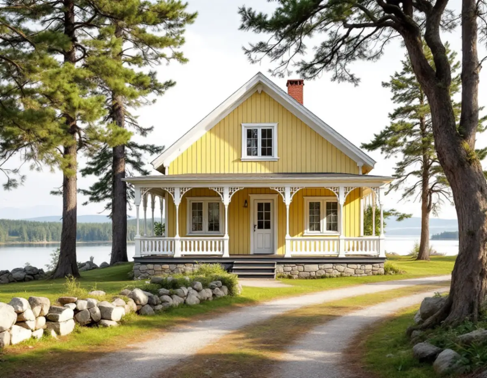
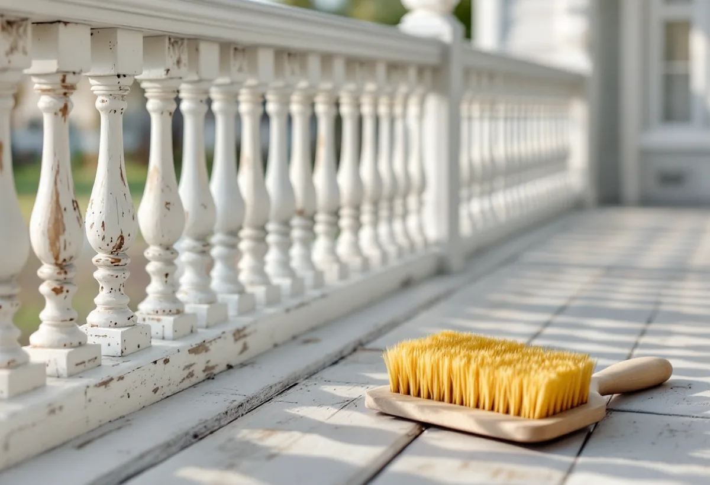
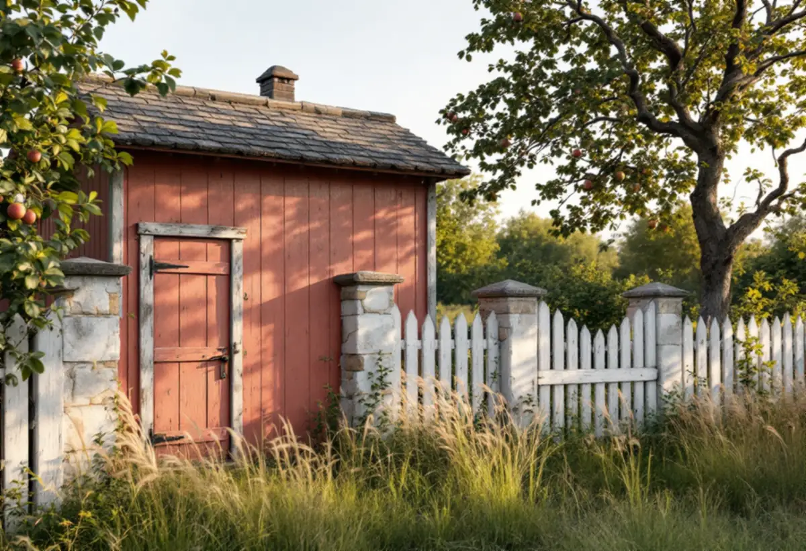

Platsbesök
Vi tittar på panel, veranda, fönster, sockel och uthus var för sig.
Längs Gamla vägen i Bollstanäs står villor från sekelskiftet 1900 med verandor och gavlar mot gatan och sjön Norrviken nedanför. Geal Entreprenad AB målar om fasader i hela Upplands Väsby och lägger upp arbetet efter husets detaljer, från verandan och sockeln till uthuset.

Kommunens kunskapsunderlag för kulturmiljö beskriver Bollstanäs som ett område med bevarad villabebyggelse från sekelskiftet 1900. Gamla vägen går på en höjd längs en bergsslänt som sluttar mot Norrviken, och stickgator leder ner till tomterna vid stranden, där flera har sjöbodar och bryggor. Husen är individuellt utformade men delar stildrag och material. De vänder framsidan mot vägen, där symmetrin och utsmyckningen syns, har höga socklar i puts och är ungefär två våningar höga.
Fasaderna har enligt underlaget i huvudsak stående eller liggande träpanel, målad i kontrast i vitt, gult eller rödfärg, och det finns även putsade hus. Verandor, gavlar och balkonger är riktade mot gatan. Området bedöms som särskilt värdefullt enligt PBL 8 kap. 13 §, och underlaget kopplar det till den statligt understödda egnahemsrörelsen, som gav jordbruksarbetare och hantverkare möjlighet att skaffa mark och bygga ett eget hus.

Kunskapsunderlaget räknar byggnader med ursprunglig volym, med frontespiser och verandor mot gatan, till de karaktärsdrag som ska bevaras. Riksantikvarieämbetets handbok nämner fönster, vattbräder, trappor, räcken och utvändig utsmyckning bland de delar som bör underhållsmålas löpande, eftersom de är hårt utsatta för väder och vind. Väntar man för länge riskerar underlaget att ta skada.
Gammal färg på verandans profilerade delar ska inte blästras bort. Länsstyrelsernas blad skriver att blästring och maskinslipning skadar träet. Riksantikvarieämbetet beskriver varmluft som en skonsammare metod än bränning på mindre ytor, men varnar för att vissa material har låg antändningstemperatur. Vi skrapar för hand där färgen sitter löst och sparar partier där den sitter bra. Fönsterbågarna rengörs bäst med sodatvätt för hand, och blottade kittfalsar grundas innan de kittas.
De höga putsade socklarna är ett annat underlag än panelen. Riksantikvarieämbetet beskriver kalkfärg som en öppen färg som släpper igenom fukt, med god vidhäftning på kalkputs men dålig på förgipsade och cementrika underlag. Vid mitten av 1900-talet gick man alltmer över från kalkbruk till kalkcementbruk, och samtidigt till andra färger än kalkfärg. Innan sockeln målas behöver vi därför veta om den är putsad med kalkbruk eller har lagats med ett cementrikare bruk senare.
Panelens kontraster ska hålla ihop med sockeln. Länsstyrelsernas blad beskriver hur färgskalan under 1800-talets andra hälft blev dovare, med bruna, gulgrå och gröna kulörer, och att det fram till 1950-talet nästan bara användes billiga jordpigment till utomhusfärg. Vill du ta fram husets tidigare färgsättning kan äldre lager skrapas fram med en vass kniv. Vi målar sedan prov på panel, knutar och foder bredvid varandra innan kulörerna bestäms.
Enkla äldre uthus i anslutning till huvudbyggnaden och äldre staket och grindar mot gatan hör också till det underlaget vill bevara. Är uthuset rödfärgat gäller Riksantikvarieämbetets råd att en slamfärgad yta bara ska målas om med slamfärg. Vid ommålning borstas lös färg och lav bort, väggen dammas av och stryks en gång. Det finns färger med namn som påminner om rödfärg men som har andra bindemedel, så innehållsförteckningen bör läsas noga.
Upplands Väsby kommun skriver att du normalt kan måla om ett en- eller tvåbostadshus och dess komplementbyggnader i en ny färg utan bygglov. Ligger huset inom ett särskilt värdefullt område kan bygglov krävas, och kravet på varsamhet gäller oavsett lovplikt. Eftersom kunskapsunderlaget bedömer Gamla vägen som särskilt värdefull, och underlaget anger att även ny bebyggelse bör anpassas i kulörval till de ursprungliga villorna, är det klokt att fråga kommunen innan kulören byts. Om kulörskalorna i andra områden kan du läsa under målare i Upplands Väsby, om fasadbyten under fasadrenovering i Upplands Väsby och om målning i stort under målare.

Vi tittar på panel, veranda, fönster, sockel och uthus var för sig.
Skrapprov på panel och snickerier och en kontroll av putsen på sockeln.
Verandan, sockeln och uthusen står som egna poster.
Handskrapning, sodatvätt av fönsterbågar och kittning av fönster.
Varje underlag får sin färgtyp och stryks i lämpligt väder.
Vi går runt huset med dig och bättrar det som behövs.
Skatteverket räknar målning av fasader på ett småhus som rotarbete, liksom byggnadsställningen. Komplementhus som förråd kan höra till småhuset, men att måla staket eller murar ger inget avdrag, så de gamla staketen mot gatan räknas utanför.
Avdraget är högst 30 procent av arbetskostnaden, högst 50 000 kr per person och år och högst 75 000 kr tillsammans med rutavdrag. Färg, material och resor ger inget avdrag. Du ska äga huset när arbetet utförs. Geal drar avdraget direkt på fakturan.
Hur mycket veranda, snickarglädje och fönster huset har, hur hög villan och sockeln är, om sockeln behöver lagas och hur många uthus som ingår väger tyngst. Efter ett gratis platsbesök får du ett skriftligt kostnadsförslag.
Fasad, fönster och invändig målning.
Målare i Stockholm →Takbyte, takbesiktning och plåtarbeten.
Takläggare i Upplands Väsby →Bollstanäs, Vilunda och Runby.
Takrenovering i Upplands Väsby →Potten, VA-avgiften och Bollstanäs.
Attefallshus i Upplands Väsby →Radhus, suterräng och samfälld VA.
Badrumsrenovering i Upplands Väsby →Karta, VA och tomtgräns.
Byggföretag i Upplands Väsby →Radhus från 70-talet och hus från bomässan.
Fasadrenovering i Upplands Väsby →Inflygning, trafik och tystare fönster i Väsby.
Fönsterbyte i Upplands Väsby →Kedjehusens fönster, kulör och beslag.
Fönsterrenovering i Upplands Väsby →Kedjehus, suterräng och radon.
Golvläggare i Upplands Väsby →Slipa trägolvet i radhuset på platta.
Golvslipning i Upplands Väsby →Radhus, kedjehus och atriumhus.
Köksrenovering i Upplands Väsby →Radhus, kedjehus och villor i Väsby.
Målare i Upplands Väsby →Rännor, stuprör och radhusplåt i Väsby.
Plåtslagare i Upplands Väsby →Altan, plank och förråd vid radhus och kedjehus.
Snickare i Upplands Väsby →Nytt tak, solceller och väderradarn.
Takbyte i Upplands Väsby →Radhusen och plasttapeten.
Tapetsering i Upplands Väsby →Radhus, kedjehus och utpekade områden.
Tillbyggnad i Upplands Väsby →Äldre villor, radhus och varsamhet.
Totalrenovering i Upplands Väsby →